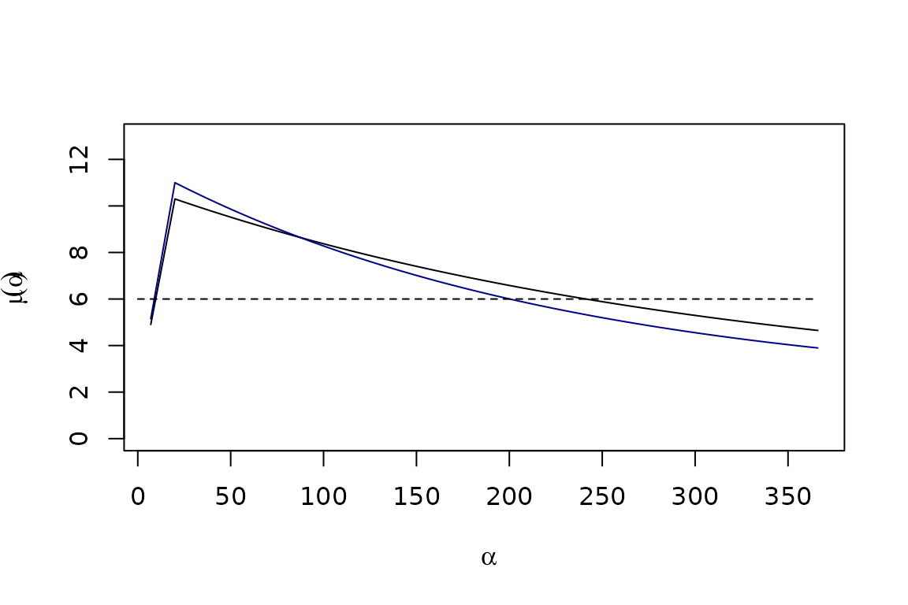
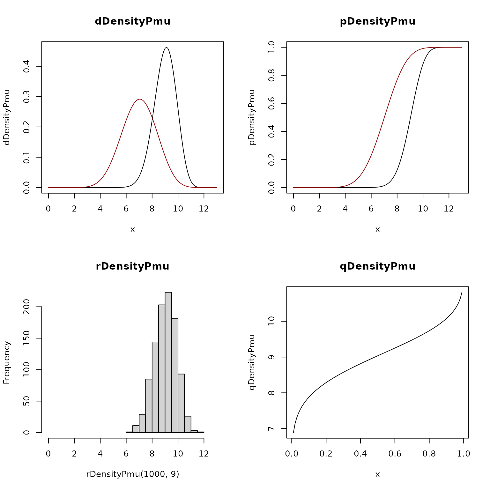
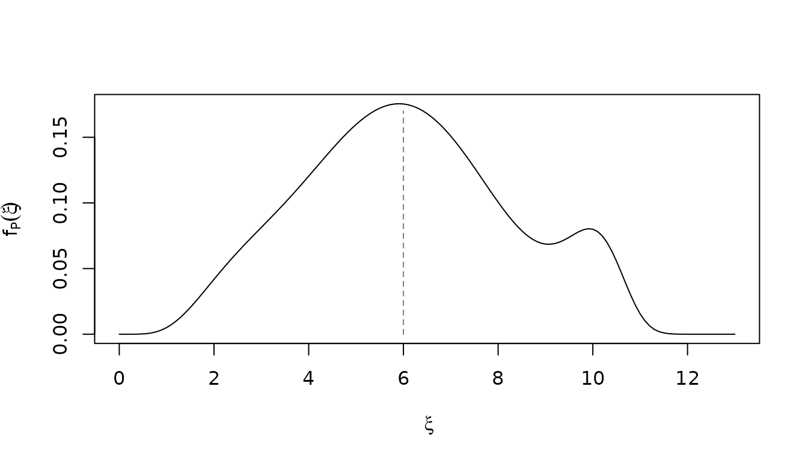

Parasite Densities in Simple Infections
Simple_Infections.RmdIn the following, we translate information about the distribution of the multiplicity of infection (MoI) and the age of infection (AoI) into probability distributions describing parasite densities. To do so:
-
We develop a function to model mean logged parasite densities as a function of the AoI: \(\mu(\alpha)\):
the variance of the distribution is a function of the mean, \(\sigma = F_\sigma(\mu)\);
the relationship between the AoI and \(\mu\) can be modified by immunity;
We develop a modified version of the \(beta\) distribution function family to model the density distribution of parasites with a given mean; \(P(\mu)\);
We compute the parasite density distributions for a function \(P(\alpha) = P_\mu(\alpha))\);
We develop a probability distribution function family to model the density distribution of parasites in a human cohort of age \(a\), \(P_\tau(a):\)
\[ P_\tau(a) \sim f_P(\xi; a, \tau) = \beta'(\xi; \mu(A_\tau(a)), \hat b(a)) \] The software is modular, making it possible to extend the code by developing other function families.
Mean, logged parasite densities, \(\mu(\alpha)\)
In pf.memory, a S3 function family was
developed to model the relationship between the age of infection (AoI)
for a parasite infection, \(\alpha\),
and the mean, \(\mu(\alpha).\) The
function alpha2mu.base has the following form:
\[\begin{equation} \mu(\alpha) = \begin{cases} \text{NA} \ & \mbox{if } 0 \leq \alpha < 7 \\[10pt] % l + (b - l) \frac{{\textstyle \alpha}}{{\textstyle D}} & \mbox{if } 7 \leq \alpha \leq D \\[10pt] l + (b - l) \frac{{\textstyle \alpha}}{{\textstyle \delta}} & \mbox{if } 7 \leq \alpha \leq \delta \\[10pt] l + (b - l) e^{-s_\alpha (\alpha-\delta)} & \mbox{if } \alpha \geq \delta\\ \end{cases} \label{mualpha} \end{equation}\]
In pf.memory, there are functions to set up the
parameters for each case, with over-writable defaults:
base_pars = par_alpha2mu_base()
base_pars1 = par_alpha2mu_base(tildeb=11, Sa=0.0045)
aalpha = 7:366
mu_alpha = alpha2mu(aalpha, 0, base_pars)
mu_alpha1 = alpha2mu(aalpha, 0, base_pars1)We plot the two functions here: with the default parameters (in black), and the other parameters (in dark blue):

\(P_\mu\)
We have developed a function family to compute parasite densities as a function of the mean of logged parasite densities, \(\mu\)
par(mfrow = c(2,2))
xx = seq(0, 13, by=0.1)
plot(xx, dDensityPmu(xx,9), type = "l", xlab = expression(x), ylab = "dDensityPmu", main = "dDensityPmu")
lines(xx, dDensityPmu(xx, 7), col = "darkred")
pp = seq(0,13, by = 0.01)
plot(pp, pDensityPmu(pp,9), type = "l", xlab = expression(x), ylab = "pDensityPmu", main = "pDensityPmu")
lines(xx, pDensityPmu(xx, 7), col = "darkred")
hist(rDensityPmu(1000, 9), main = "rDensityPmu", xlim = c(0,13))
qq = seq(0.01,.99, length.out=100)
plot(qq, qDensityPmu(qq,9), type = "l", xlab = expression(x), ylab = "qDensityPmu", main = "qDensityPmu")
\(P(\xi, \alpha)\)
We must specify a function to model exposure:
At age five, the distribution of the age of infection looks like this:
To compute parasite density distributions, we need to construct a
mesh over \(\xi.\) The function
dDensityPa computes the parasite distributions as a
function of the host age, given a function describing the history of
exposure.
meshX= seq(0, 13, by=.1)
Pmu = dDensityPa(meshX,5*365, foiP3)Now, parasite densities in simple infections have the given distribution of mean logged parasite densities.
